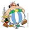
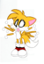
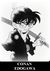
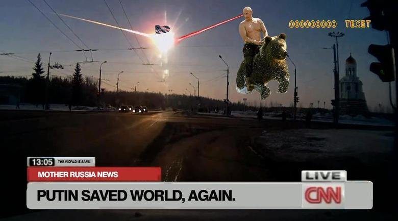
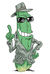
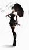
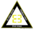

De: La Frikipedia, la enciclopedia extremadamente seria.
Fordus Gñapero Solitario Harry El del Pote  Sakimaki Mad Max  Aixa  Conan Titvs
 62666  Pepino-Man10 Axelaxel12 Jaken95 Fdecus  Frikisexigirl!!! Krusher  Monkey Face
Autor(es):
 De: La Frikipedia, la enciclopedia extremadamente seria. De: La Frikipedia, la enciclopedia extremadamente seria.
De: La Frikipedia, la enciclopedia extremadamente seria. De: La Frikipedia, la enciclopedia extremadamente seria.